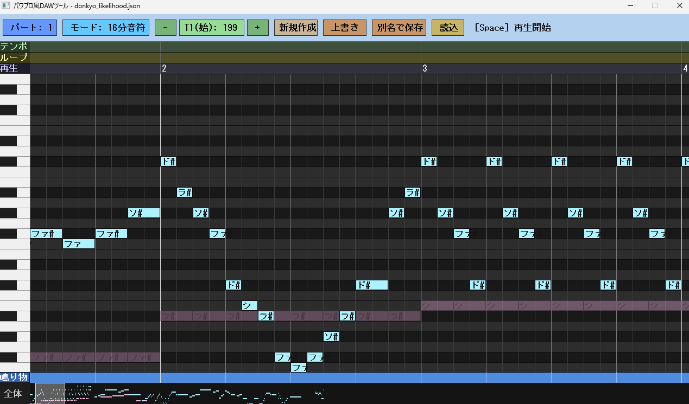
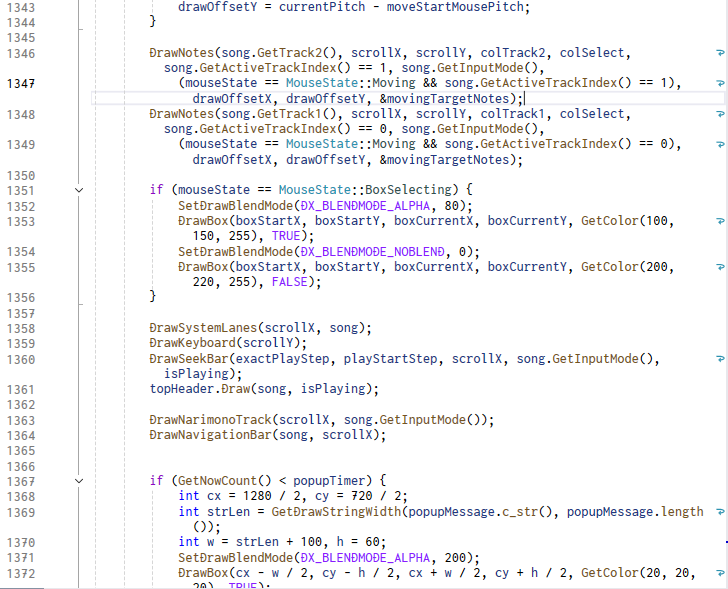

パワプロの作曲機能が不便だから、DAWソフトを作る。

基本情報
- 制作時期
- 大学4年6月～7月（制作期間：計4日）
- 役割
- 個人制作
- 使用ツール
- C++, DXライブラリ, Gemini 3.1 Pro, Audacity
- リンク
- 未公開
制作のきっかけ
『eBASEBALL パワフルプロ野球』シリーズ(以下:
パワプロ)には、応援曲作成という機能が搭載されています。これはDTMのように好きな曲を打ち込み、登録できる機能です。
これ自体は素晴らしい機能なのですが、ゲーム機のコントローラーで操作することを前提とするため操作の快適性に欠け、同機能上で試行錯誤を繰り返すには時間がかかりすぎる欠点がありました。
そこで、応援曲作成の下書きを目的とするDAWを開発しようと思い至りました。
こだわった点・工夫した点
-
「市販のDAWじゃいけない理由」になる
勿論、市販のDAWをカスタムして使うこともできたでしょう。今でこそDAWの間口がやや狭まっていますが、少し前はCakewalkもStudio Oneも無料版を配布していました。
しかし、これらではいけない理由として、「パワプロ独自の制約」があります。音域に始まり、和音を作れない、56小節以内、トラック数は2以内…
これらは、市販のDAWソフトではデフォルトで制限がもっと広いものばかり。意識して作れば良いかもしれませんが、「うっかりしていて制約外のことをしてしまった」ということも頻発が予想されます。
それならば、「パワプロ独自の制約を守った環境で開発できるDAWソフト」があれば最も安心して作れると考え、パワプロの応援曲作成に課せられる制約を可能な限りソフトに落とし込みました。 -
思わぬ落とし穴：音源選定
正直なところ、このDAWを作り始める前は、「C++にも音源ライブラリくらいあるだろう」と思っていました。
ところが、音源選定からプロジェクトへの反映まで自分でやらなければならないことが判明し、音源選定に苦戦しました。
「F3～A5までの29音を全て網羅した、ビブラートのない、加工してプロジェクト内のファイルとして配布しても問題ない金管楽器の音源」という制約条件を満たすものはなかなか見つからなかったのです。
音源選定に2日を要し、見つけたのが『University of Iowa Musical Instrument Samples』でした。
これならいけると思った矢先、ダウンロードした中身がaiff形式であったことが判明し、Audacityを使ったカット・wav変換・ループポイント設定の作業にこれまた時間を要しました。
これが原因で、数時間で終わる予定だったDAW開発が、週末の休みを4日も潰すことになってしまいました。

振り返り・学び
初めは、クオリティを出せたら配布して、フィードバックをもらいながら改良しようと考えていましたが、現時点で配布するには至っていません。
理由として、「AIが絡んでいるからかかっても数時間だろう」と考えていたことがあります。今の素材の豊富さ、AIの開発速度の速さを実感する出来事があったこともあり、手作業で音源調整を行ったりする作業のことを考えず、開発期間を過小評価していました。
将来的に実務でもAIを使うことになると思うので、開発期間の想定を正しく行えるようになりたいと考えさせられる経験でした。